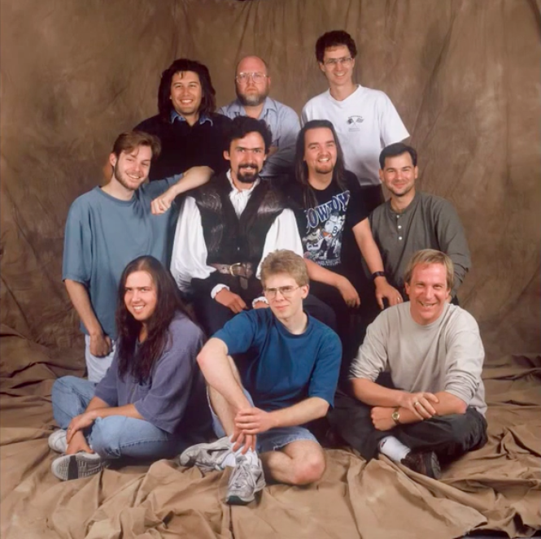
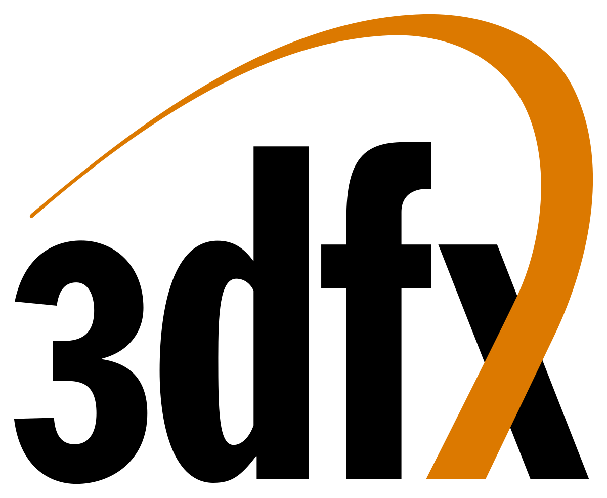
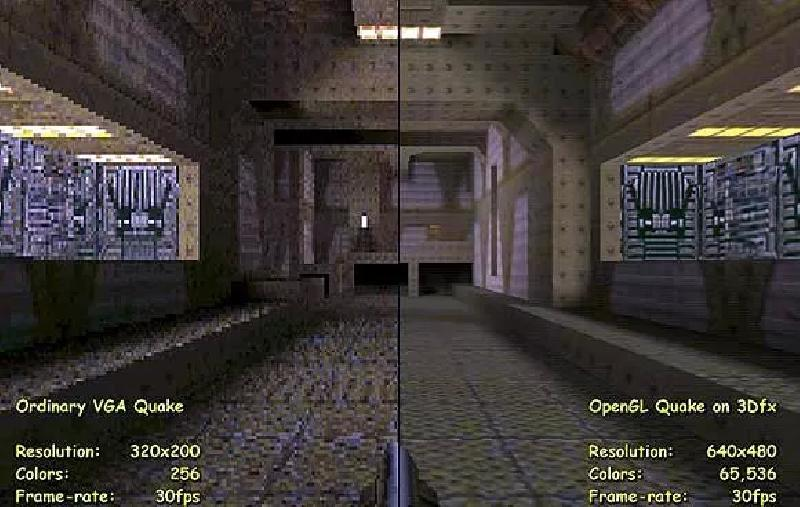

Macc's quake movies
¿Qué es esto que estoy leyendo?
Macc's Quake Movies es una web personal dónde comentamos todo tipo de noticias y eventos que nos parecen interesantes. Es una web de temática de videojuegos, y la nostalgia de la llamada generación 3dfx, que mezcla lo
retro y
lo postmoderno en una explosión de cultura pop.
¿Quién se encuentra detrás de esto?
MQM comenzó como un simple proyecto personal de MaccDen, para que los aficionados de Quake pudieran publicar sus cortometrajes: Ya sea contribuciones de Machinima, o como producciones
propias.
Actualmente el autor original y a una serie de grandes colaboradores que se han ido sumando al proyecto actualizan la web
con artículos de temática diversa, con especial predilección por los videojuegos en particular y la nostalgia en general.
Actualmente tengo algunos servidores que ejecutan el mod de q3plus en América, donde jugamos con otros colegas eventos organizados de fin de semana y juegos de picks-up.
Si desea participar en una alternativa de Quake Live con un juego y un entorno visual mejorados, no dude en unirse a nosotros en nuestro servidor de Discord y juegos en línea.
Agradezco la gran ayuda de la comunidad Quake Excessive
Plus, y varios contactos en común, por el soporte de esta web.
QUAKE
¿Qué es Quake?

Quake 3 Arena, o también reconocido como Q3A, es un videojuego de disparos en primera persona publicado el 2 de Diciembre de 1999. El juego fue desarrollado por id Software, con música
compuesta por Sonic Mayhem y Front Line Assembly. Quake III Arena es el tercer título en la serie y difiere de juegos anteriores de la serie Quake en excluir los elementos comunes de los denominados juegos para un solo
jugador, enfocándose en su lugar en la acción multijugador.
El 19 de Agosto de 2005, id Software publicó el código fuente completo para estos dos juegos bajo la licencia GNU, así como hicieron con sus motores y trabajos anteriores. Esto no convierte al
juego completamente en GNU, de todos modos, ya que las texturas y otros datos no fueron publicados con el código. Bajo este concepto, la comunidad de Quake crearon varios mods que con el paso del tiempo se fueron
transformando
en
entregas famosas, por ejemplo: Call Of Duty, Half Life, Team Fortress 2, Medal of Honor, Battlefield, Counter Strike, Deus Ex, Postal 2, Insurgency, Hitman, Hexen, Dusk, Apex Legends, etc.
3DFX
¿Qué es 3dfx?

Los Voodoo eran chips que, como el nombre de su fabricante indica, permitían “efectos 3D”. 3dfx únicamente diseñaba y fabricaba los chips, debiendo ser los fabricantes tradicionales de tarjetas gráficas los que los
implementaran en un PCB. Las primeras Voodoo 1 contaban con un procesador gráfico y entre 4 y 8 MB de RAM, todo ello funcionando a 50MHz sobre un puerto PCI.
Se trataba de un hardware complementario, diseñado exclusivamente para jugar. Un componente más que podías instalar en un PC, como quien instala un módem o un lector CD. No sustituía a la tarjeta gráfica, sino que se
instalaba
entre ésta y el monitor. Un cable VGA iba de la gráfica a las Voodoo y otro igual salía de ésta hacia el monitor.
De este modo, el PC funcionaba normalmente y solo cuando ejecutábamos un juego que estuviese expresamente programado para aprovechar la Voodoo, ésta empezaba a “acelerar” los procesos gráficos. Comenzaba la era de las
“aceleradoras 3D”.
Pero la cosa no era tan sencilla como comprar una tarjeta gráfica extra y mejorar los juegos. De por medio estaba también el software. 3dfx proporcionó para sus Voodoo una interfaz de programación propia, el GLIDE. Esta
API se
sumaría a las dos que más se utilizarían en la época para juegos 3D: el reciente Direct3D de Microsoft y OpenGL de Silicon Graphics. Para que las Voodoo mostrasen todo su potencial, el juego debía soportar GLIDE.
¿Por qué tuvo tanto éxito Quake?

Direct3D y OpenGL eran unos estándares flexibles, que buscaban la compatibilidad y la sencillez de programación, GLIDE permitía programar por y para los
chips Voodoo. Esta programación permitía una importante optimización, lo que acabó consiguiendo que un juego corriendo en Glide sobre una Voodoo no tuviese nada que ver con el mismo juego corriendo en D3D.
En id Software 1996 lanza Quake. Como jugador de incontables títulos y plataformas desde las arcade Space Invaders, me atrevo a asegurar que aquel título de id Software fue el más trascendental de nuestra corta, pero
nutrida,
historia de los videojuegos. No solo consagró el género FPS e inició el multijugador competitivo sobre Internet y red local; además supuso la piedra de toque a partir de la que apreciar lo que podía ser jun juego 3D
“acelerado”.
Jhon Romero, creador de Quake, mantuvo una especie de enamoramiento con 3dfx. No solo ponía a este fabricante por las nubes en cada entrevista, sino que id Software optimizó Quake y Quake 2 para sacar todo el rendimiento a
sus
Voodoo Graphics. La simbiosis era perfecta. Quake y Voodoo eran un matrimonio perfecto que quedaban tan por encima de cualquier otra experiencia de juego que los hacían imprescindibles.
{kind=link}
{kind=link}
{kind=link}
{kind=link}